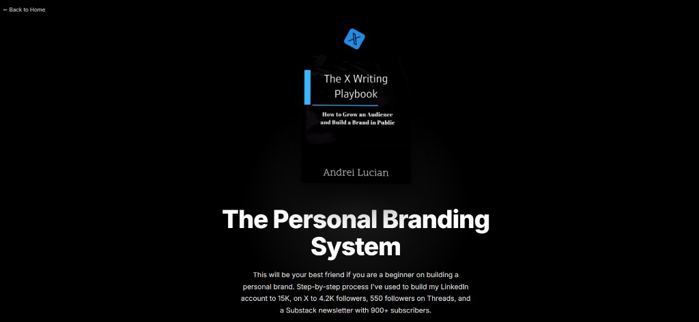

Stop optimizing hooks. Pick one metric for 90 days.
Confused creators chase everything. Clear ones count one thing.
If you're optimizing hooks, followers, revenue, and newsletter subs at 400 followers, you will drive yourself insane — and post like a nervous intern.
Most creators die from indecision, not bad content. They never choose who they're for, what they're measuring, or what they'll give up to win.
Clarity is choosing what to ignore. Everything else is tactics pretending to be strategy.
Decision debt is exhaustion
→ Every undecided question taxes you daily → 𝕏 or LinkedIn? thread or post?
→ Decision fatigue before creation → you feel tired before you write
→ Fragmented signal → algorithm and humans both reward incoherence
→ One metric for 90 days → negotiation stops → inputs compound
→ Inputs compound → identity as operator solidifies → strategy becomes automatic
I chose replies + DMs under 2K — not because a guru said so, because replies were the only signal that meant a human cared. Followers followed. Revenue followed that. Order matters.
The three forks
You can't optimize followers, revenue, newsletter subs, and brand deals simultaneously at 400 followers. You'll drive yourself insane and post like a nervous intern.
Most creators die from indecision, not bad content. They never choose who they're for, what they're measuring, or what they'll give up to win.
Three decisions. That's the whole strategy deck. Everything else is tactics.
Pick one primary metric for 90 days. I chose replies + DMs when I was stuck under 2K. Not because a guru said so — because replies were the only signal that meant a human cared.
The three forks
Optimize replies
+ Best under 2K — you learn rooms, voices, what lands
− Slow vanity metric if you ignore posts entirely
Optimize followers
+ Feels motivating short-term
− Chases ghosts — empty growth, no DMs
Optimize revenue
+ Forces real offers early
− Brutal without trust — you'll spam
I ran replies first. Followers followed. Revenue followed that. Order matters.
My 90-day card
Written on a note card taped to my monitor: 50 replies on focus days. 20 minimum otherwise. 3 posts. 5 DMs/week. Check followers Sunday only.
That's it. No hook research rabbit holes until the card was green for a month.
Clarity is choosing what to ignore.
Decision debt
Every undecided question taxes you daily. 𝕏 or LinkedIn? Thread or post? Niche or broad? Long or short? Hook formula A or B? You're not tired from writing. You're tired from choosing.
Decision debt is the hidden reason creators feel exhausted before they create. They fragment their signal — new niche every month, new format every week, new platform every time a post flops. The algorithm and humans both reward coherence. The same person showing up with the same point of view, week after week.
Three decisions — the whole strategy deck
Most creators die from indecision, not bad content. They never choose who they're for, what they're measuring, or what they'll give up to win. Everything else — hooks, formats, tools — is amendment-level.
My version 1.0, written in fifteen minutes on a notes app: Audience — stuck creators at month 2–6, posting into silence. Metric — replies and DMs for the first ninety days, not followers. Sacrifice — Netflix, random scrolling, the fantasy that one viral post would save me.
I laminated the card eventually. Stupid? Maybe. Worked? Absolutely. When a post flopped, I didn't question my niche. I questioned whether it served the audience I'd chosen. When I was tempted to pivot because of one bad week, the constitution held me steady.
Why order matters
I see creators change their metric every time a post flops. That's not strategy — that's mood management. Pick one number. Defend it for ninety days. Then reassess with data.
I ran replies first. Followers followed. Revenue followed that. Under 2K, replies are your timeline. You learn rooms, voices, what lands. Optimizing followers at 400 followers chases ghosts — empty growth, no DMs. Optimizing revenue without trust makes you spam.
Clarity is choosing what to ignore. My ninety-day card: fifty replies on focus days, twenty minimum otherwise, three posts, five DMs per week, check followers Sunday only. No hook research rabbit holes until the card was green for a month.
Revisit quarterly — but write version 1.0 today
These three decisions aren't permanent. They're quarterly. Audience sharpens. Metric shifts from engagement to revenue. Sacrifice changes. But you need a version 1.0 today — not a perfect version after another month of thinking.
Delusional clarity isn't delusion. It's direction. Direction beats talent when talent won't pick a lane. Write them. Pin them. Read them every Sunday before you review metrics.
The Sunday review that saved me from pivot #7
Month 5 I almost changed my metric to followers because a thread hit 8K impressions. Ego bait. I pulled out the laminated card: replies + DMs for ninety days. I was on day 62. Changing metric would reset the experiment. I stayed. The thread brought 40 followers and zero DMs. My reply week brought 6 DMs and 12 followers. The card was right. I was emotional.
That's what a constitution does — it protects you from your best day and your worst day equally. Strategy isn't picking the right metric forever. It's picking one long enough to learn something true.
Sacrifice is a feature, not a bug
Sacrifice isn't punishment. It's scope. When I gave up Netflix for ninety days, I wasn't being extreme — I was buying two hours a night for replies. When I stopped checking followers daily, I wasn't avoiding feedback — I was stopping feedback from lying to me on a lagging indicator.
Write your sacrifice in concrete terms. Not "I'll work harder." Instead: "No scrolling before 2pm reply block." Not "I'll be consistent." Instead: "Three posts by 7:15am or the day doesn't start."
When ninety days ends
At day 91, reassess with data — not vibes. Did replies convert to DMs? Did DMs convert to opportunities? If yes, keep or raise the floor. If no, change one variable — not five. Maybe your rooms are wrong. Maybe your proof density is thin. Maybe you're posting when you should be replying. One lever. Another ninety days.
Hooks are tactics — constitution is strategy
I spent two months in hook research rabbit holes while my replies stayed at five a day. I could've written ten viral-style openers and still been invisible — because under 2K, distribution happens in rooms, not on your stage.
When I finally picked replies as the metric, hooks didn't disappear — they got simpler. One number. One failure. One line of proof. The hook served the constitution instead of replacing it.
If you're optimizing hooks before you've optimized who you're for and what you're counting, you're polishing a door nobody's walking through yet.
I see creators change their metric every time a post flops. That's not strategy — that's mood management. Pick one number. Defend it for 90 days. Then reassess with data.
My card lived on my monitor for a year. Laminated it eventually. Stupid? Maybe. Worked? Absolutely.
Decision debt
Every undecided question taxes you daily. 𝕏 or LinkedIn? Thread or post? Niche or broad? Long or short?
Decision debt is the hidden reason creators feel exhausted before they create. They're not tired from writing. They're tired from choosing.
How I made mine
Audience: stuck creators at month 2–6, posting into silence. Metric: replies and DMs for the first 90 days — not followers. Sacrifice: Netflix, random scrolling, and the fantasy that one viral post would save me.
Written in 15 minutes on a notes app. Referenced every Sunday for almost three years.
When a post flopped, I didn't question my niche. I questioned whether it served the audience I'd chosen.
Revisit quarterly
These three decisions aren't permanent. They're quarterly. Audience sharpens. Metric shifts from engagement to revenue. Sacrifice changes.
But you need a version 1.0 today — not a perfect version after another month of thinking.
Indecisiveness is death because it fragments your signal. The algorithm and humans both reward coherence — the same person showing up with the same point of view, week after week.
Your three decisions are your brand's constitution. Everything else — hooks, formats, tools — is amendment-level.
Write them. Pin them. Read them every Sunday before you review metrics. When you're tempted to pivot because of one flop, the constitution holds you steady.
Delusional clarity isn't delusion. It's direction. Direction beats talent when talent won't pick a lane.
- You're starting to notice you change your metric every time a post flops
- You're starting to notice hook research feels productive but nothing moves
- You're starting to notice you're optimizing outputs you don't control
- You're starting to notice clearer creators aren't smarter — they picked one number
- You want a strategy deck but you keep collecting tactics instead
My laminated card
Written in fifteen minutes: Audience — stuck creators at month 2–6. Metric — replies and DMs for ninety days. Sacrifice — Netflix, random scrolling, the fantasy that one viral post would save me. I laminated it eventually. Stupid? Maybe. Worked? Absolutely.
When a post flopped, I didn't question my niche. I questioned whether it served the audience I'd chosen. Month 5 I almost changed metric because a thread hit 8K impressions. The card held. The thread brought 40 followers and zero DMs. My reply week brought 6 DMs.
But Andrei — what if I pick the wrong metric? Wrong metric for ninety days with data beats no metric forever with vibes. At day 91, reassess — one lever, not five. You're not marrying the metric. You're running an experiment long enough to learn.
How to engineer a ninety-day constitution
Decision debt feels like burnout but it's fragmentation. You wake up tired before you create because you've already negotiated twenty micro-decisions. Pick audience, metric, sacrifice — and the energy returns. Not from motivation. From closure.
Sacrifice isn't punishment. It's scope. "No scrolling before 2pm reply block" is clearer than "work harder." "Three posts by 7:15am or the day doesn't start" is clearer than "be consistent."
How to engineer a ninety-day constitution
List every open question draining you daily. Those are unpaid decisions. Close three into one audience, one metric, one sacrifice.
Write version 1.0 today — not perfect version after another month of thinking. Pin it where you see it before you open analytics.
Ban what you won't check daily. For me: follower tab except Sunday. For you: maybe analytics, maybe competitor accounts, maybe draft folders.
Defend the metric for 90 days. One adjustment per Sunday review. Delusional clarity isn't delusion — it's direction.
Thank you for reading.
– Andrei
When You're Ready, Here's How I Can Help You:

The 0→1K Daily System
Hit 1,000 followers on 𝕏 in 90 days — daily checklist, copy-paste templates, and engagement scripts in folders you open every morning.
€147 €47
Get Instant Access →